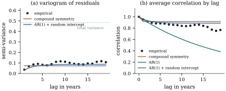

33.4 Covariance models for longitudinal data
A longitudinal study follows subjects over time. Its
data are clustered by subject, but with a structure the
previous sections have not used: observations inside a
cluster are ordered, and the distance between
two of them matters. Compound symmetry ignores the
ordering; an unstructured covariance uses it but pays
33.4.1. Three sources of correlation
A longitudinal measurement is usefully read as the sum of three parts, a decomposition due to Diggle (1988):
The vector
Let subject
| Model | Parameters | |
|---|---|---|
| independence | ||
| compound symmetry | ||
| first-order autoregressive | ||
| exponential (spatial power) | ||
| autoregressive plus random intercept | ||
| Toeplitz of order |
||
| random intercept and slope | ||
| unstructured |
Each model must also be nonnegative definite; the
constraint is
Compound symmetry is Definition 33.2.1,
what a random intercept alone produces: it makes the
correlation between the first and last visit equal to
that between consecutive visits, which over five years
it rarely is. The autoregressive model is Definition 21.6.1
within a subject and needs equally spaced occasions; the
exponential model is its continuous-time version. A
random intercept added to either puts a floor under the
decaying correlation, and that two-source version of Eq. 33.4.1
fits much real longitudinal data. The Toeplitz model
lets the decay take an arbitrary shape, truncated after
Warning. The covariance model is a choice with consequences. It changes the standard errors of the fixed effects, and — unlike in the balanced cases of the previous sections — the estimates themselves whenever the design is unbalanced or the regressors vary within subjects.
33.4.2. Choosing, and what goes wrong if you choose badly
Let the
(a)
(b) The empirical covariance estimate
(c) Let
Proof.
(a)
(b) Put
(c) The first two sentences are Definition 32.4.1 and Theorem 32.4.2, and
Part (c) has a practical corollary: fix the
mean model first and compare covariance models by
restricted likelihood; compare mean models by ordinary
likelihood, or by a Wald or
with
Part (a) is why all this is less dangerous than it
sounds: a wrong covariance model costs efficiency, not
validity, since
Warning. The empirical standard
error protects against the covariance model and nothing
else. If
33.4.3. Checking the fit of a covariance model
Two displays do most of the work, both built from
residuals
Grunfeld’s panel records gross investment, market
value and capital stock for
| Covariance model | ||||
|---|---|---|---|---|
| independence | 1 | 476.95 | 478.95 | 482.33 |
| compound symmetry | 2 | 114.83 | 118.83 | 125.59 |
| autoregressive | 2 | 49.89 | 53.89 | 60.65 |
| autoregressive + random intercept | 3 | 29.87 | 35.87 | 46.01 |
| random intercept and slope | 4 | 98.66 | 106.66 | 120.18 |
| Toeplitz of order 4 | 4 | 147.97 | 155.97 | 169.49 |
Independence is hopeless: the firms differ enormously
in size, and log investment is nearly constant within a
firm relative to the spread between firms. Compound
symmetry captures that and improves
Figure 33.4.1 shows
why. The residual correlations are
With the selected model the coefficient of
import numpy as np
import statsmodels.api as sm
df = sm.datasets.grunfeld.load_pandas().data
firms = sorted(df["firm"].unique())
years = np.sort(df["year"].unique())
N, m = len(firms), len(years) # 11 firms, 20 years
t = (years - years.mean()) / 10 # centred and scaled time
Ylist, Xlist = [], []
for f in firms:
d = df[df["firm"] == f].sort_values("year")
Ylist.append(np.log(d["invest"].to_numpy()))
Xlist.append(np.column_stack([np.ones(m), t, np.log(d["value"].to_numpy())]))
p = Xlist[0].shape[1]
n = N * mWith a common
from scipy.optimize import minimize
def reml(Sigma, Ylist, Xlist):
"""-2 x the restricted log likelihood, and the GLS estimate, for a common Sigma."""
L = np.linalg.cholesky(Sigma)
logdet = 2 * np.sum(np.log(np.diag(L)))
solve = lambda B: np.linalg.solve(Sigma, B)
XtWX = sum(X.T @ solve(X) for X in Xlist)
XtWy = sum(X.T @ solve(y) for X, y in zip(Xlist, Ylist))
beta = np.linalg.solve(XtWX, XtWy)
quad = sum((y - X @ beta) @ solve(y - X @ beta) for X, y in zip(Xlist, Ylist))
s, ld_info = np.linalg.slogdet(XtWX)
n, p = len(Ylist) * Sigma.shape[0], len(beta)
return len(Ylist) * logdet + quad + ld_info + (n - p) * np.log(2 * np.pi), beta
lag = np.abs(np.subtract.outer(np.arange(m), np.arange(m)))
Zrc = np.column_stack([np.ones(m), t]) # random intercept and slope basis
def build(name, th):
"""Sigma for each covariance model, from an unconstrained parameter vector."""
if name == "independence":
return np.exp(th[0]) * np.eye(m)
if name == "compound symmetry":
return np.exp(th[0]) * np.eye(m) + np.exp(th[1]) * np.ones((m, m))
if name == "AR(1)":
return np.exp(th[0]) * np.tanh(th[1])**lag
if name == "AR(1) + random intercept":
return (np.exp(th[0]) * np.tanh(th[1])**lag + np.exp(th[2]) * np.ones((m, m)))
if name == "random intercept and slope":
D = np.array([[np.exp(th[1]), th[3]], [th[3], np.exp(th[2])]])
return np.exp(th[0]) * np.eye(m) + Zrc @ D @ Zrc.T
if name == "Toeplitz(4)":
a = np.concatenate([[1.0], th[1:4]]) # a moving average of order 3 ...
g = np.array([a[:4 - u] @ a[u:] for u in range(4)])
c = np.concatenate([g / g[0], np.zeros(m - 4)]) # ... so the band is nonneg. definite
return np.exp(th[0]) * c[lag]
raise ValueError(name)
MODELS = {"independence": 1, "compound symmetry": 2, "AR(1)": 2,
"AR(1) + random intercept": 3, "random intercept and slope": 4,
"Toeplitz(4)": 4}
def fit(name, start):
def obj(th):
S = build(name, th)
if np.min(np.linalg.eigvalsh(S)) <= 1e-9:
return 1e6
return reml(S, Ylist, Xlist)[0]
best = min((minimize(obj, s, method="Nelder-Mead",
options={"maxiter": 20000, "xatol": 1e-9, "fatol": 1e-9})
for s in start), key=lambda r: r.fun)
S = build(name, best.x)
d2l, beta = reml(S, Ylist, Xlist)
q = MODELS[name]
return {"m2ll": d2l, "aic": d2l + 2 * q, "bic": d2l + q * np.log(n - p),
"q": q, "Sigma": S, "beta": beta}
starts = {"independence": [[-1.0]],
"compound symmetry": [[-1.0, -1.0]],
"AR(1)": [[-1.0, 1.0]],
"AR(1) + random intercept": [[-1.5, 1.0, -1.5]],
"random intercept and slope": [[-2.0, -1.0, -2.0, 0.0], [-3.0, -2.0, -3.0, 0.0]],
"Toeplitz(4)": [[-1.0, 1.5, 1.0, 0.5], [-1.0, 2.5, 2.0, 1.0]]}
res = {name: fit(name, starts[name]) for name in MODELS}
for name in MODELS:
r = res[name]
print(f"{name:28s} q={r['q']} -2logL_R={r['m2ll']:9.3f} "
f"AIC={r['aic']:9.3f} BIC={r['bic']:9.3f}")
best_name = min(MODELS, key=lambda k: res[k]["aic"])
Xall = np.vstack(Xlist)
yall = np.concatenate(Ylist)
Sbest = res[best_name]["Sigma"]
A = np.linalg.inv(sum(X.T @ np.linalg.solve(Sbest, X) for X in Xlist))
beta = res[best_name]["beta"]
resid = [y - X @ beta for X, y in zip(Xlist, Ylist)]
meat = sum(np.outer(X.T @ np.linalg.solve(Sbest, r), X.T @ np.linalg.solve(Sbest, r))
for X, r in zip(Xlist, resid))
cov_robust = A @ meat @ A * N / (N - 1) # empirical ("sandwich") covariance
XtXinv = np.linalg.inv(Xall.T @ Xall)
beta_ols = XtXinv @ Xall.T @ yall
s2_ols = np.sum((yall - Xall @ beta_ols)**2) / (n - p)
for j, lab in enumerate(["intercept", "time/10", "log value"]):
print(f"{lab:10s} GLS {beta[j]: .4f} model se {np.sqrt(A[j, j]):.4f} "
f"empirical se {np.sqrt(cov_robust[j, j]):.4f} "
f"| OLS {beta_ols[j]: .4f} se {np.sqrt(s2_ols * XtXinv[j, j]):.4f}")33.4.4. Missing data
Longitudinal data are rarely complete. The
mixed-model machinery handles ragged data without
complaint — Proposition 33.4.1
never assumed a common
Warning. Software that fits a mixed model to incomplete longitudinal data makes a missing-at-random assumption on the analyst’s behalf, silently, and the empirical standard error of Proposition 33.4.1(b) does not protect against its failure. Chapter 41 treats missing data properly.
33.4.5. Exercises
A. Check your understanding
A trial measures
Sketch the population variogram
Solution. Compound symmetry gives
B. Practice
Two analysts fit the investment data of Example (Investment in eleven firms).
The first uses the mean model of the example with an
autoregressive covariance; the second adds a quadratic
term in
Solution. By Proposition 33.4.1(c)
the two restricted likelihoods are densities of
different random vectors, of dimensions
Show that the Toeplitz model of Definition 33.4.1
with
C. Going deeper
The autoregressive model is nested in the
autoregressive-plus-random-intercept model at